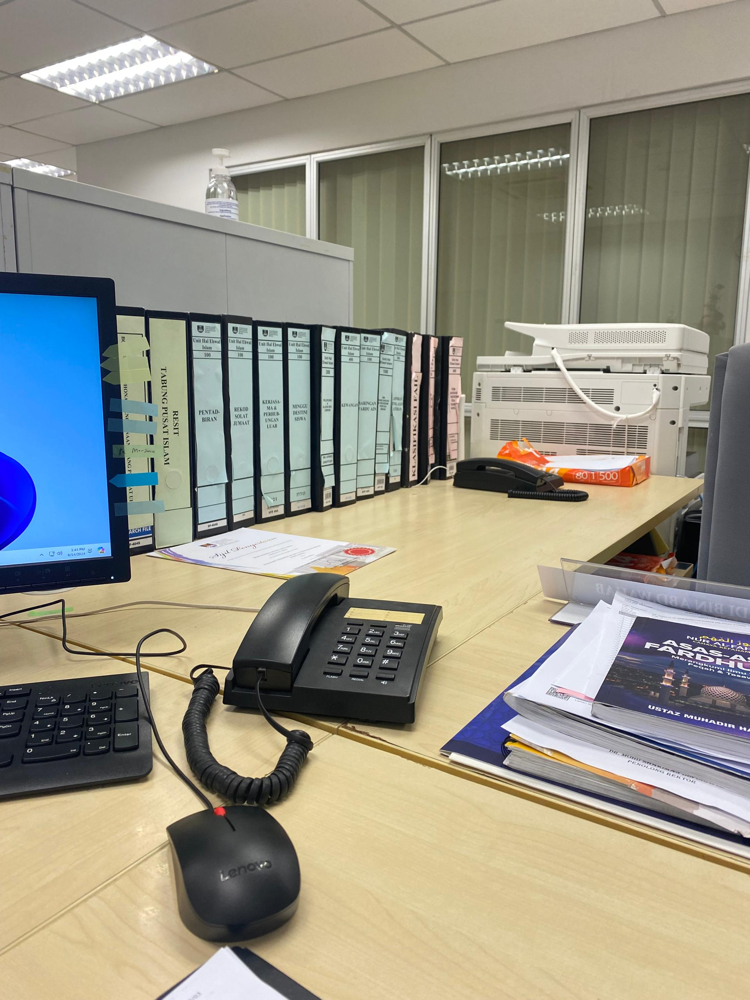

🎀 MEMORIES OF INTERNSHIP 🎀
Here are some photos and video clips of my journey on doing my practical:



My internship journey was a rewarding experience that began at Magma Trd Resources, where I spent a week exploring the fast-paced world of Marketing. Through brief, it sparked my interest in business communication and collaboration. I then continued at UiTM Seremban 3 in the Islamic Affairs Unit known as UHEI for seven weeks. Here, I honed my organizational and administrative skills, contributing to meaningful projects and learning the importance of teamwork and adaptability. Through challenges and successes, I discovered my strengths, improved my skills, and gained invaluable insights. This journey wasn't just about work but it was about growth, resilience, and preparing for future career endeavors.
Here are some photos and video clips of my journey on doing my practical: